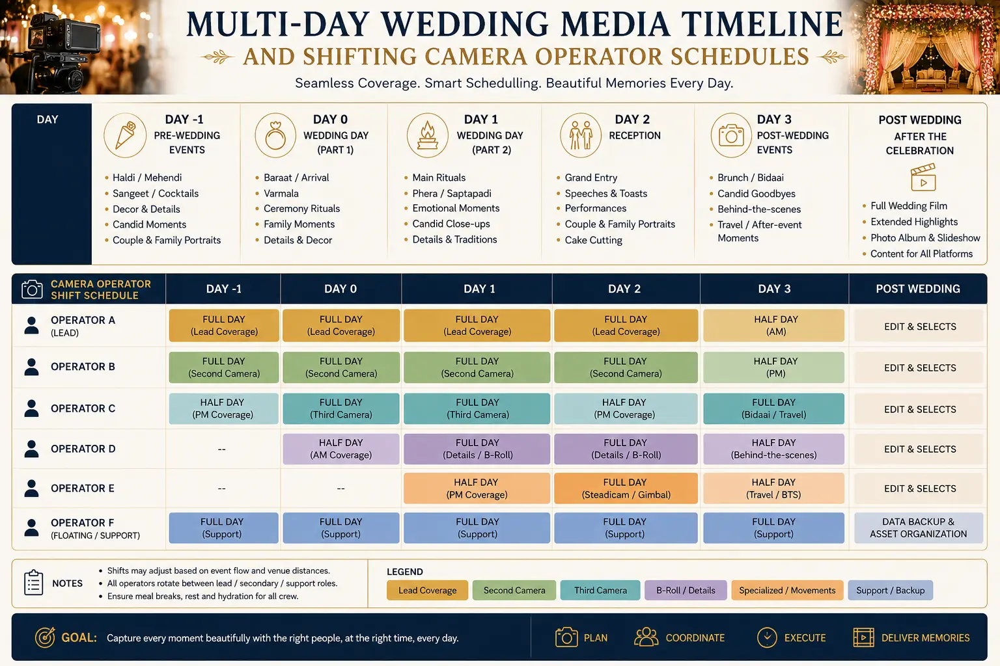
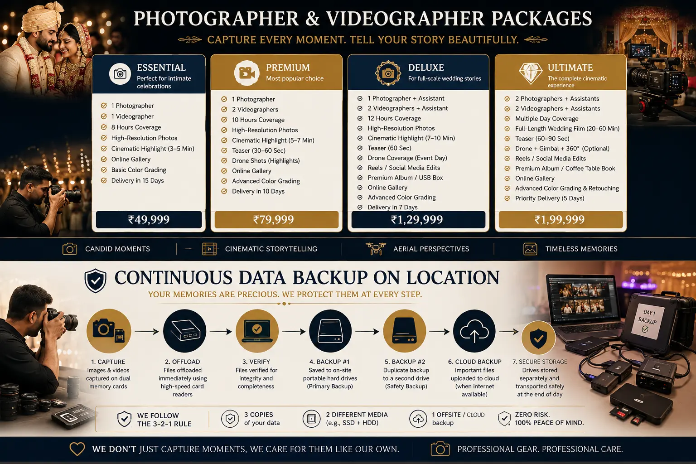

Structuring a Multi-Day Media Timeline for Sprawling Traditional Weddings
The Scale of Traditional Indian Wedding Media Production
A traditional Indian wedding is not a single event — it is a multi-day production spanning 3-5 days of ceremonies, rituals, gatherings, and celebrations that unfold across multiple venues, time zones of the day, and emotional registers. From the intimate haldi ceremony at dawn to the grand reception at midnight, from quiet family blessings to explosive baraat processions with live bands and fireworks, the visual and emotional landscape of a traditional wedding shifts dramatically from hour to hour and day to day.
For media teams, this scale presents logistical challenges that no other type of event photography or videography approaches. A typical 3-day wedding generates 12-16 hours of active shooting per day — 36-48 hours of total production time. The crew operates in extreme environmental variability: indoor and outdoor venues, controlled and uncontrolled lighting, quiet ritual spaces and deafening celebration halls, intimate 20-person gatherings and crowded 1000-person receptions.
Covering this scale without a structured Multi-Day Wedding Media Timeline is the most common cause of missed moments, exhausted crews, corrupted data, and disappointed clients. A Photographer and videographer package that does not include detailed timeline planning, crew rotation protocols, and continuous data backup on location procedures is fundamentally incomplete — regardless of how talented the individual operators may be.
Building the Timeline: Pre-Event Planning Framework
The Multi-Day Wedding Media Timeline is constructed during the pre-event planning phase — typically 4-8 weeks before the wedding. This timeline is the operational blueprint that the entire crew references throughout the event:
- Event schedule mapping. Obtain the complete event schedule from the wedding planner or family — every ceremony, ritual, meal, performance, and transition across all days. Map each event to a specific time window, venue, and expected attendance level. Identify the non-negotiable moments that must be covered regardless of any schedule changes (muhurtham, vows, mangalsutra, first dance, family group photos).
- Venue reconnaissance. Visit every venue in advance — photograph the spaces, map lighting conditions at different times of day, identify power outlet locations, and note any physical constraints (pillars blocking sightlines, low ceilings limiting flash, restricted areas). For multi-venue weddings, calculate travel time between venues and build transition buffers into the timeline.
- Crew assignment and shift scheduling. Shifting camera operator schedules across a multi-day event requires deliberate rest rotation. No operator should work more than 10-12 hours in a single day without a mandatory rest period. For a 3-day wedding with 14-hour daily coverage, this means planning two shifts per day with a 2-hour overlap during peak events.
- Equipment allocation per event. Assign specific camera bodies, lenses, lighting equipment, and audio recorders to each event based on the shooting conditions. Low-light indoor ceremonies require different equipment than outdoor daytime events. Pre-configure camera settings for each shooting scenario to minimise setup time during transitions.
Complete Coverage
A structured Multi-Day Wedding Media Timeline ensures every ceremony, ritual, and moment is assigned to a specific operator with specific equipment — eliminating the risk of missed coverage during transitions or shift changes.
Crew Sustainability
Shifting camera operator schedules with mandatory rest rotations prevent the fatigue-driven quality decline that occurs when operators work 14+ hours without breaks — protecting image quality across the entire event.
Data Protection
Continuous data backup on location — dual-copy every memory card before reformatting, store backup drives in separate physical locations — protects terabytes of irreplaceable wedding footage from equipment failure, theft, or corruption.
Budget Transparency
Understanding Full Marriage Coverage Cost requires transparent pricing that accounts for crew size, equipment quality, number of shooting days, backup protocols, and the complete deliverable package.

Crew Management: Shifts, Roles, and Communication
Hiring a professional camera crew for a multi-day wedding is not simply about assembling talented individuals — it is about building a coordinated team with defined roles, communication protocols, and shift structures that sustain quality across the entire event:
- Lead photographer and lead videographer. Each discipline has a designated lead who makes creative decisions, manages the shot list, and coordinates with the event planner and family. The leads work the priority events and delegate supporting events to their team members.
- Second and third shooters. Supporting photographers and videographers cover simultaneous events (groom and bride preparation happening in parallel), provide alternative angles during key moments, and take over primary coverage during lead operator rest periods.
- Data manager. A dedicated team member whose sole responsibility is continuous data backup on location — collecting memory cards from operators, copying files to two separate backup drives, verifying file integrity, logging card contents, and issuing reformatted cards back to operators. This role is critical and should never be assigned as a secondary task to a shooting operator.
- Communication system. Equip the crew with wireless earpiece radios or a group messaging system for real-time coordination. When events run ahead of or behind schedule — which they always do at traditional weddings — instant communication ensures the right operators are in the right position at the right time.
Day-by-Day Coverage Architecture
While every traditional wedding has unique ceremonies and scheduling, the typical 3-day coverage architecture follows a predictable pattern:
Day 1: Pre-Wedding Events
- Haldi, mehndi, sangeet, or equivalent pre-wedding ceremonies — typically held in daytime at the family home or a smaller venue.
- Coverage requirement: 2 photographers + 1 videographer minimum. These events are intimate and documentary in nature — candid coverage of rituals, family interactions, and preparation.
- Key shots: close-up ritual details, family group portraits, getting-ready sequences, decorations and venue setup.
- Equipment: natural-light-optimised lenses (35mm f/1.4, 85mm f/1.4), portable LED panels for fill, wireless audio recorder for ambient sound capture.
Day 2: Main Ceremony
- The primary wedding ceremony — the muhurtham, vows, and rituals that are the emotional and cultural centre of the event.
- Coverage requirement: full crew deployment — 3 photographers + 2-3 videographers. Every critical ritual must be captured from multiple angles simultaneously because there are no second takes.
- Key shots: the couple's entrance, the muhurtham moment, mangalsutra tying, thali, ring exchange, first look, family blessings, group photographs.
- Equipment: dual-camera video rigs for backup redundancy, 70-200mm telephoto for discreet ceremony capture, on-camera audio recorders for priest chanting and vows.
Day 3: Reception and Send-Off
- The grand reception — stage events, couple entrance, cake cutting, performances, family speeches, dinner, and farewell.
- Coverage requirement: 2-3 photographers + 2 videographers. Reception events are more structured and predictable, allowing slightly smaller crews if Day 2 used maximum deployment.
- Key shots: couple's reception entrance, stage portraits, candid guest moments, dance floor energy, cake cutting, farewell emotional moments.
- Equipment: portable flash and modifier kits for reception hall lighting, gimbal stabiliser for dynamic entrance and dance floor coverage, drone for outdoor venue establishing shots.
Choosing the Right Package
When evaluating a Photographer and videographer package for a multi-day wedding, families should look beyond the quoted Full Marriage Coverage Cost and evaluate the operational structure behind the price. Key questions to ask:
- How many operators will be on-site each day, and what is the shift rotation plan?
- What is the data backup protocol — how many copies, where are they stored, who manages the process?
- What equipment redundancy is included — backup camera bodies, backup memory cards, backup batteries?
- What deliverables are included — highlight film, full ceremony edit, photo album, social media edits, raw files?
- Are combined wedding media deals available that bundle photography and videography under a single production team with coordinated coverage?

Conclusion
A sprawling traditional wedding demands the same production planning discipline as any professional media project. A structured Multi-Day Wedding Media Timeline — with detailed event mapping, shifting camera operator schedules, continuous data backup on location protocols, and clear role assignments — is the operational framework that ensures complete, consistent, high-quality coverage across every day, every venue, and every moment.
Hiring a professional camera crew that operates with these production standards — not just individual talent but coordinated team management — is the difference between a wedding media experience that captures everything beautifully and one that misses critical moments due to fatigue, disorganisation, or data loss. Combined wedding media deals that bundle photography and videography under a unified production team deliver the coordination, consistency, and cost-efficiency that multi-day weddings require.
At The PhD Ads, we offer comprehensive Photographer and videographer package options for multi-day traditional weddings — complete Multi-Day Wedding Media Timeline planning, crew rotation management, on-location data backup, and transparent Full Marriage Coverage Cost structures that cover every ceremony from haldi to reception.
Key Topics
Complete Coverage for Every Day of Your Wedding
At The PhD Ads, we plan and execute multi-day wedding media timelines — rotating crews, continuous data backup, and coordinated photo-video packages that capture every ceremony beautifully.
Email: team@e2o.in